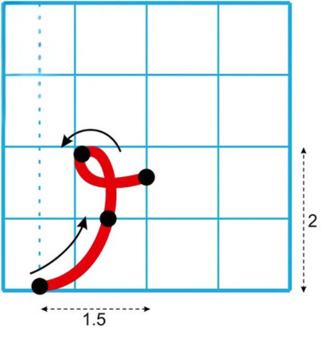

Các thông số chuẩn trong ảnh:
• Chiều cao: 2 ô ly (từ đường kẻ 1 lên đường kẻ 3)
• Độ rộng: 1.5 ô ly (từ điểm đặt bút đến điểm dừng bút)
• Điểm đặt bút: ĐK 1 (cách ĐKD 0.5 ô ly)
• Điểm chạm ĐK 2: Cách ĐKD 1.5 ô ly (độ cao 1 ô ly)
• Vòng thắt: Chạm ĐK 3 (cao 2 ô ly), xoắn nhỏ sang trái
• Điểm dừng bút: Trên ĐKD 2 (rộng 1.5 ô ly, cao ~1.5 ô ly)
Ưu điểm bản vẽ SVG mới:
✔ Khớp 100% tỷ lệ hình học học sinh tiểu học
✔ Đường cong toán học Bezier mượt mà, không gấp khúc, không nhọn
✔ Chuẩn 4 chấm định vị, 2 mũi tên chuyển động & 2 kích thước đo
✔ Vector SVG siêu nét trên mọi màn hình điện thoại & máy tính